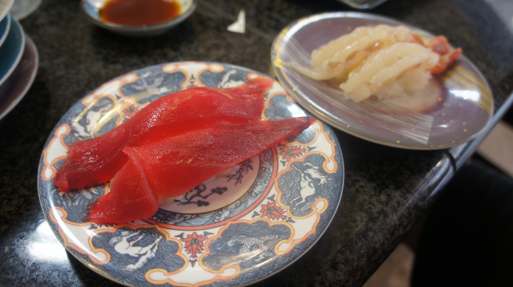

回転寿司まぐろ問屋やざえもんイオン具志川店
그냥 어딘가 가다가 배고파서 들린 집이었는데 엄청 맛있었다. 특히 중간에 저 계란말이는 ㅠㅠ 직접 하시는걸 보고 참을수 없어서 주문함 ㅠㅠ 흐엉 ㅠㅠ 맛있어 ㅠㅠ 어떻게 저렇게 만드는거지 ㅠㅠㅠㅠ 계란만 막 풀어서 막 대충 만드는데 짱맛있음 ㅠ
전체적으로 두명이서 5만원정도 (4천 몇백엔) 나오긴 했지만 훌륭했다. 물론 위에있는것만 먹은건 아니고.. 저거 *2 + 몇개더 먹었다. 모르고 옆에 할머니꺼 참치도 뺏어먹음.. ㅠㅠ 죄송해요…
하.. 장어 ㅠㅠ 또먹고싶다 ㅠ